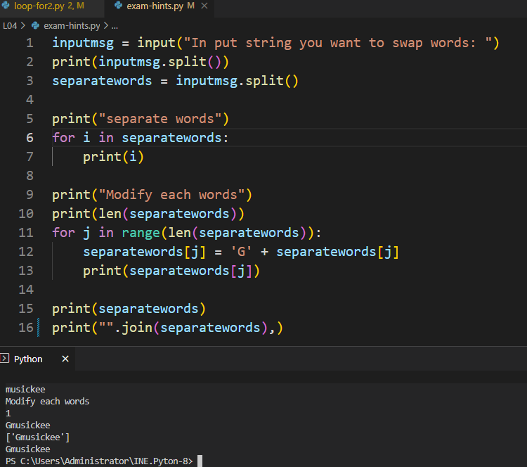
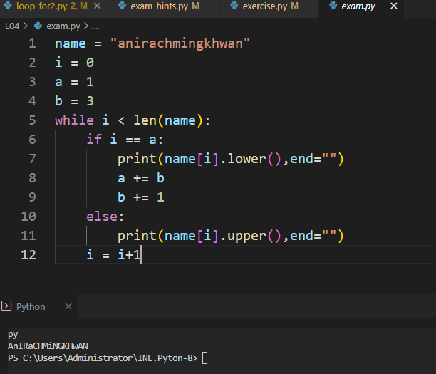

• เขียนครอบด้วย อัญประกาศเดี่ยว 'I am "Python".' 'I\'m Python.'
• เขียนครอบด้วย อัญประกาศคู่ "I'm Python." "I am \"Python\"."
• เขียนครอบด้วย อัญประกาศเดี่ยวสามตัวติด '''I'm "Python".'''
• เขียนครอบด้วย อัญประกาศคู่สามตัวติด """I'm "Python"."""
สตริง (string) เก็บอักขระ (character) ตั้งแต่ศูนย์ตัวขึ้นไป เรียงจากซ้ายไปขวาต่อกันไป แต่ละตัวมีเลข index ระบุตำแหน่ง โดย index ของตัวซ้ายสุดคือ 0 อักขระแต่ละตัวในสตริงเป็นได้ทั้งตัวอักษร ตัวเลข และสัญลักษณ์พิเศษต่าง ๆ
การเขียนสตริงทำได้หลายแบบดังนี้
ตัวอย่างการเข้าใช้อักขระและสตริงย่อยในสตริง (สมมติให้ s = "ABCDEFG")
• len(t) ได้จำนวนตัวอักขระใน t โดย len('') ได้ 0
• s[0] เหมือน s[-len(s)] ได้ "A" ส่วน s[-1] เหมือน s[len(s)-1] ได้ "G"
• อย่าลืมว่า index ของสตริง s ต้องอยู่ในช่วง 0 ถึง len(s)-1 จากซ้ายไปขวา และ -1 ถึง -len(s) ถอยจากขวามาซ้าย
ดังนั้นเราเขียน s[k] ได้ โดยที่ -len(s) ≤ k ≤ (len(s)-1) เพราะฉะนั้น "01234"[-6] กับ "01234"[5] ผิด
• s เหมือน s[:] เหมือน s[0:] เหมือน s[:len(s)] เหมือน s[::] เหมือน s[::1]
• s[::2] หยิบตัวที่ index คู่ได้ "ACEG", s[1::2] หยิบตัวที่ index คี่ได้ "BDF"
• s[::-1] เหมือน s[-1::-1] เหมือน s[-1:-(len(s)+1):-1] ได้ "GFEDCBA"
• ถ้าเขียน s[a:b] เพื่อเลือกสตริงย่อยออกมา ค่า a กับ b เป็นอะไรก็ได้ ไม่ผิด
"01234"[2:50000] ได้ "234", "01234"[4999:50000] ได้ ""
"01234"[-500:-2] ได้ "012", "01234"[-3:-500:-1] ได้ "210","01234"[-500:-300] ได้ ""
• ใช้ for c in s : เพื่อแจกแจงอักขระทีละตัวใน s จากซ้ายไปขวาเก็บในตัวแปร c นำไปใช้ในวงวนได้
ตัวอย่างการจัดการสตริง
• s.upper() ได้สตริงที่เปลี่ยนตัวอักษรให้เป็นตัวพิมพ์ใหญ่ทั้งหมด
• s.lower() ได้สตริงที่เปลี่ยนตัวอักษรให้เป็นตัวพิมพ์เล็กทั้งหมด
• s.title() ได้สตริงที่เปลี่ยนตัวอักษรให้เป็นตัวพิมพ์ใหญ่ตัวแรกของแต่ละคำ
• s.capitalize() ได้สตริงที่เปลี่ยนตัวอักษรให้เป็นตัวพิมพ์ใหญ่ตัวแรกของสตริง
• s.swapcase() ได้สตริงที่เปลี่ยนตัวอักษรให้เป็นตัวพิมพ์ใหญ่เป็นตัวพิมพ์เล็ก และตัวพิมพ์เล็กเป็นตัวพิมพ์ใหญ่
• s.center(10) ได้สตริงที่เติมช่องว่างด้านซ้ายและด้านขวาให้ครบ 10 ตัวอักษร
• s.center(10,'*') ได้สตริงที่เติม * ด้านซ้ายและด้านขวาให้ครบ 10 ตัวอักษร
• s.lower() ได้สตริงที่เปลี่ยนตัวอักษรให้เป็นตัวพิมพ์เล็กทั้งหมด
• s.title() ได้สตริงที่เปลี่ยนตัวอักษรให้เป็นตัวพิมพ์ใหญ่ตัวแรกของแต่ละคำ
• s.capitalize() ได้สตริงที่เปลี่ยนตัวอักษรให้เป็นตัวพิมพ์ใหญ่ตัวแรกของสตริง
• s.swapcase() ได้สตริงที่เปลี่ยนตัวอักษรให้เป็นตัวพิมพ์ใหญ่เป็นตัวพิมพ์เล็ก และตัวพิมพ์เล็กเป็นตัวพิมพ์ใหญ่
• s.center(10) ได้สตริงที่เติมช่องว่างด้านซ้ายและด้านขวาให้ครบ 10 ตัวอักษร
• s.center(10,'*') ได้สตริงที่เติม * ด้านซ้ายและด้านขวาให้ครบ 10 ตัวอักษร
รูปแบบการประมวลผลสตริงที่พบบ่อย
ต้องการหยิบอักขระในสตริงจากซ้ายไปขวามาประมวลผลทีละตัว
ต้องการนับว่าสตริง s มีตัวเลขกี่ตัว
c = 0
for e in s :
if '0' <= e <= '9' :
c += 1
ต้องการหยิบทีละตัว พร้อมกับindex ของตัวนั้น ๆ
c = 0
for e in s :
if '0' <= e <= '9' :
c += 1
for i in range(len(s)):
c = s[i]
print(i,c)
หรือ
for i,c in enumerate(s):
print(i,c)
ต้องการหยิบอักขระในสตริงจากขวามาซ้ายทีละตัว
c = s[i]
print(i,c)
หรือ
for i,c in enumerate(s):
print(i,c)
for e in s[::-1] :
...
ถ้าต้องการนับว่ามี t ปรากฏอยู่ใน s กี่ครั้ง...
c = 0
k = s.find(t)
while k >= 0 :
c += 1
k = s.find(t,k+1)
ใช้สตริงสะสมข้อมูลเพื่อนนำมาแสดงทีหลัง
k = s.find(t)
while k >= 0 :
c += 1
k = s.find(t,k+1)
หาจำนวนเฉพาะที่มีค่าน้อยกว่า 30
result = ""
for n in range(2,30):
for k in range(2, n) :
if n % k == 0 : break
else:
result += str(n) + ", "
print(result[:-2]) ได้ 2, 3, 5, 7, 11, 13, 17, 19, 23, 29
result = ""
for n in range(2,30):
for k in range(2, n) :
if n % k == 0 : break
else:
result += str(n) + ", "
print(result[:-2]) ได้ 2, 3, 5, 7, 11, 13, 17, 19, 23, 29


« previous Home Next »